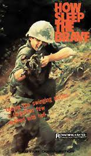

H. E. Bates was born in Northamptonshire in 1905. He published his first novel, The Two Sisters, when he was twenty,
and for the next decade built up a reputation as a writer of great versatility. During the Second World War Bates
was commissioned by the RAF as a short story writer, where he wrote the acclaimed How Sleep the Brave and The
Greatest People in the World. His most popular creation was the effervescent Larkin family about whom he wrote five
novels including The Darling Buds of May and A Little of What You Fancy. In 1973 H. E. Bates was awarded the C.B.E.
He died in 1974.

Introduction
First published under the pseudonym of Flying Officer X, H. E. Bates’s stories of the heroic exploits of British
bomber crews during the Second World War created a sensation when they appeared in 1942, selling over two million
copies all over the world. Bates lived among the painfully young pilots and recorded their lives, and those of their
loved ones, with an emotional attention that deeply moved the generation that lived through the war, and an
intensity that reverberates down the decades.